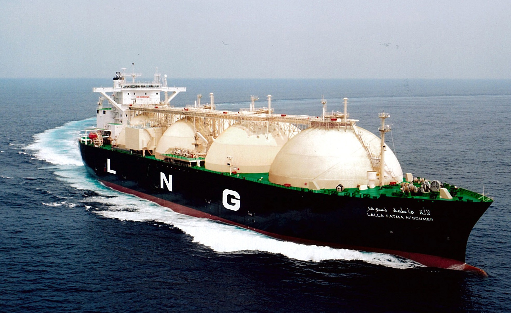
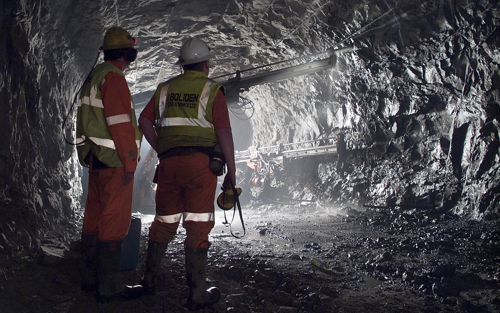

Our Company Approach
Our main goal is to become the leading supplier of choice for LNG in the Asia Pacific Region for the
next 50 years. KSP business is composed of students and teachers of Kent Street Senior High School.
Here at KSP, we work collaboratively with the community around us and we do what is best for our
environment. We follow a Code of Conduct which supports Operational Excellence (OE) and Capital Stewardhip and Organizational Capability (CSOC), together with KSP Values and CoRE Values. KSP employees ensure the best performance because we're "the right people doing the
right thing on the right time".
Our Company Leaders ensure that our BU's are structured and operated according to economic, political and resource availability limits which accomodate the efficient development of our assets in a professional, safe and profitable manner for the benefit of all Western Australian Communities. Factors which govern the success and development of our BU's to ensure that our LNG Projects underpin long term growth:
- Asia-Pacific Energy Demand
- Energy Supply
- Environmental Stewardship
- Technology
- Skill Shortage
- Changing Regulations
- Competition
At KSP, we aim for high quality product for our consumers based on the common work ethic which is:
- Socially responsible
- Respects and support the law
- Human rights
- Benefits the community
- Preserve the environment
KSP Values
- Integrity - We accept responsibility for our actions
- Trust - Is important in securing the best relationsips with out business
partner, colleagues and costumers
- Diversity - We embracing the differences in talents, culture, creativity
and thoughts and we integrate these aspects to develop a unique business
- Ingenuity - We use our creativity to problem solve, discover new and
unexpected things to achieve result and not giving up on new challenges
- Partnership - We establish relationship with our communities, workforce,
competitors, costumers and each other
- Protecting People and the Environment - Our assets are our workforce
and the environment from which we extract our resource. We ensure that these assets
are treated with the utmost respect they deserve to ultimately deliver a value product
- High Performance - We aim to deliver the best value product to our
costumers by ensuring that our workforce and environment are best performer
CoRE Values
- Diversity - The understanding that every individual is unique as well as recognising and embracing our differences. Our differences are what bring us together and allow us to achieve greatness.
- Commitment - The act of commiting is dedicating yourself to a cause voluntarily. Commiting youself to do something is the only way to get the task done. Everyone in the team has to commit themselves in order to succeed.
- Consistency - Consistency is the condition of sticking to the same conditions and form. When you are working on something, you have to be consistent with it to make sure the task is carried out in high lever
- Innovation - To be thinking outside the box at a new ideas that is out of ordinary. Innovative is the key to all group discussion and projects
- Curiosity - To be curious is to have a strong desire to learn, understand, and find out something new
Our company is based on providing
- LNG (Liquid Natural Gas)
- Downstream and Chemical
- Technology and Renewable Energy
- Energy Effiency
Our Company is Made up of 6 Business Units
- Flatback Turtle
- Skink
- Seasnake
- Golden Bandicoot
- Euro
- Oyster Catcher

What is LNG?
LNG (Liquified Natural Gas) is natural gas that is liquified
Learn more
Capital Stewardship and Organizational Capability (CSOC)
CSOC is a combination of people, process, technology and partnerships that KSP uses
to achieve world class performance.
Learn more

Operational Excellence (OE)
OE is a systematic management of safety, health, environment, reliability and efficiency
to achieve world-class performance. A KSP Culture is based on "zero incidents
and injuries".
Learn more